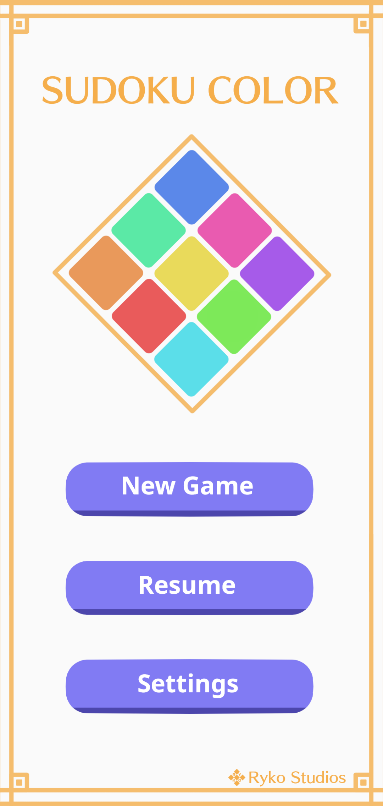
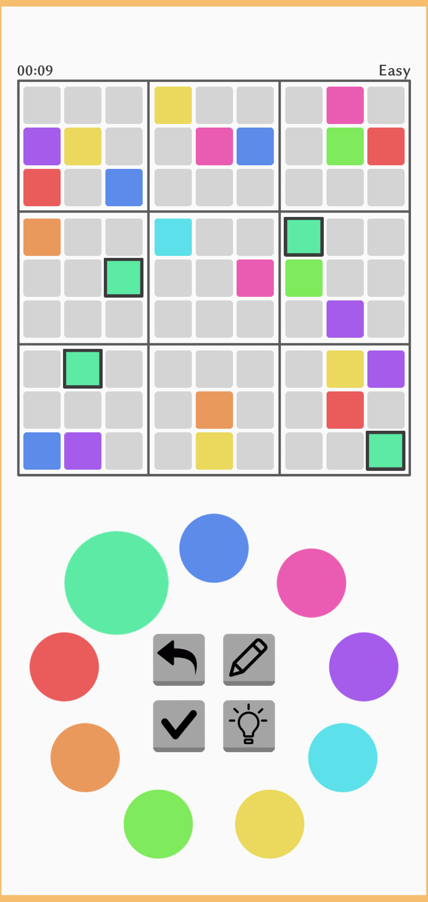
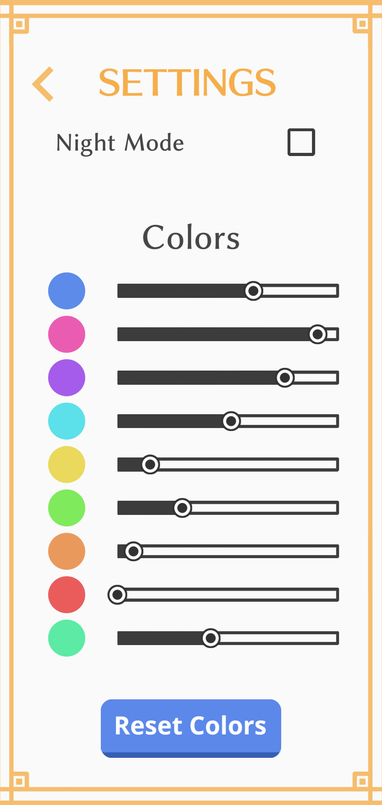
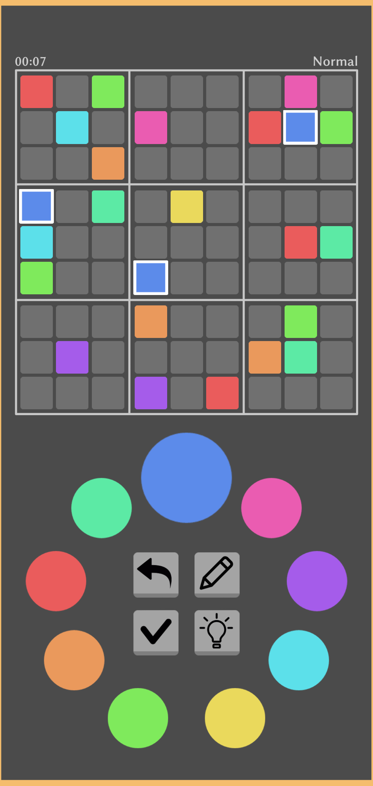

Sudoku Color App

Description:
A published Android application of the classic sudoku game that uses colors instead of numbers. The user is able to change the colors using the sliders in the settings. This was a solo project, which meant that besides coding the sudoku algorithm in C++ I also had to make all of the sprites for the application. I used sqlite to store the sudoku puzzles locally with some added serialization. The link below takes you to the app page.
Achievements:
- Developed and published a Sudoku mobile application using C++, cocos2dx, and Android Studio
- Implemented a sudoku solver algorithm and built an sqlite database for serialization
- Utilized Android Studio to efficiently test the application on a real phone
Key Components:
- C++
- Visual Studio 2017
- Cocos2dx
- Android Studio
- Sqlite
- Clip Studio
Images



